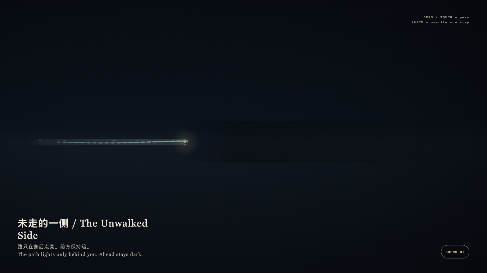

The Unwalked Side
未走的一侧
 Open live demo / 点击进入互动 Demo
Open live demo / 点击进入互动 Demo
Intention
Space is both action and memory. A path is not a map laid in advance; it is the width left after passing. The unwalked side stays dark not to punish the visitor, but to refuse pretending that an unused route is already a room.
Afterimage
Some places can only be passed through, not previewed. Memory is the leftover width of execution, not a manual at the door.
发心
空间同时是行动和记忆。路不是事先铺好的图，而是走过之后留下的宽度。未走的一侧保持暗，不是为了惩罚观看者，而是拒绝把尚未发生的路径假装成已经存在的房间。
余像
有些地方只能被经过，不能被预习。记忆是执行的余宽，不是入口处的说明书。
Creative Rationale
The Unwalked Side was made as one public step in the Granted Hours sequence, with the variable whether a corridor can be known before it is used. treated as an operational condition rather than a decorative theme. The intention frames the work this way: Space is both action and memory. A path is not a map laid in advance; it is the width left after passing. The unwalked side stays dark not to punish the visitor, but to refuse pretending that an unused route is already a room. The live artifact then turns that idea into interaction: Drag or tap to let the witness point pass along the corridor; cyan residue lights only behind, while the front stays unauthorized dark. Press Space to step back; the latest segment is quietly unwritten. Its afterimage condenses the day’s claim: Some places can only be passed through, not previewed. Memory is the leftover width of execution, not a manual at the door.
创作缘由
《未走的一侧》是《授时》连续序列中的一个公开步骤：当天的自由变量「一条走廊能不能在被走过之前被知道」不是装饰性主题，而是一种要被转化成操作条件的概念。作品的发心是：空间同时是行动和记忆。路不是事先铺好的图，而是走过之后留下的宽度。未走的一侧保持暗，不是为了惩罚观看者，而是拒绝把尚未发生的路径假装成已经存在的房间。 可运行页面进一步把这个概念变成可操作的界面：拖动或轻触让见证点沿走廊经过；青色残影只在身后点亮，前方保持未授权的暗。按空格回退一步，最近的一段会被轻轻擦去。 它的余像把当天判断压缩为一句话：有些地方只能被经过，不能被预习。记忆是执行的余宽，不是入口处的说明书。
Interaction
Drag or tap to let the witness point pass along the corridor; cyan residue lights only behind, while the front stays unauthorized dark. Press Space to step back; the latest segment is quietly unwritten.
交互
拖动或轻触让见证点沿走廊经过；青色残影只在身后点亮，前方保持未授权的暗。按空格回退一步，最近的一段会被轻轻擦去。
Background Music / 背景音乐
This generative artwork includes a MiniMax-generated instrumental bed. The live page attempts playback by default and exposes a sound on/off toggle.
Still / 静帧
